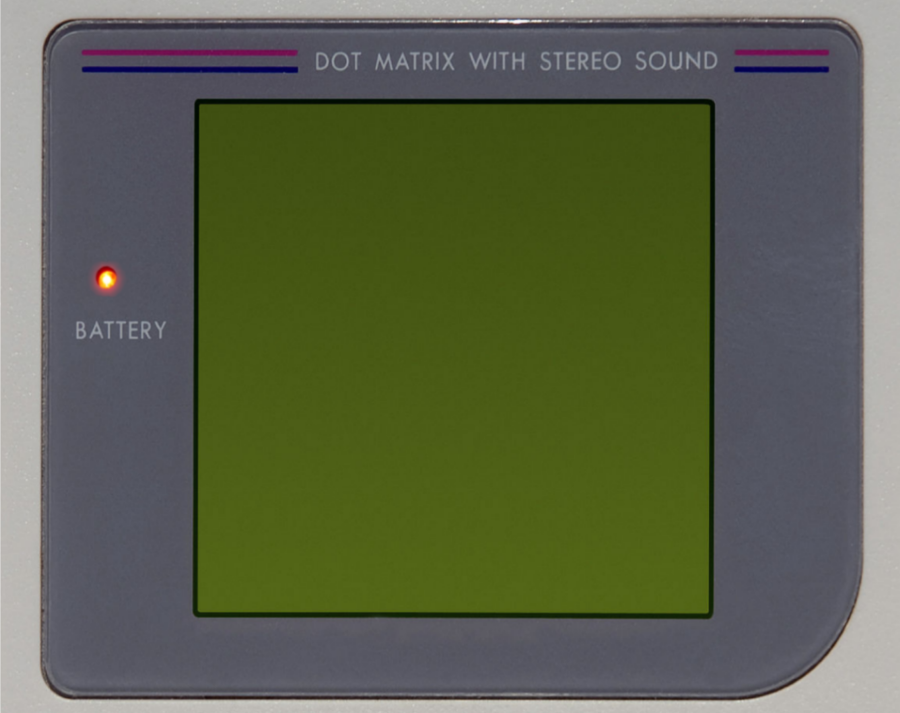

This demo highlights how to apply video filter in real time to any video in a Web Page.
Using the power of the GPU with Babylon.js can dramatically improve the user experience and make possible real time filtering of videos on the web.

You can have a look at the associated article on our blog.